“Pod, Service 알아보기 - 쿠버네티스 기본편 (1)”
Pod
Pod란

- 쿠버네티스의 최소 운영 단위.
- 쿠버네티스가 파드라는 단위로 컨테이너를 묶어서 관리.
- resource들을 template(yaml) 파일로 정의.
1 | apiVersion: v1 |
특징
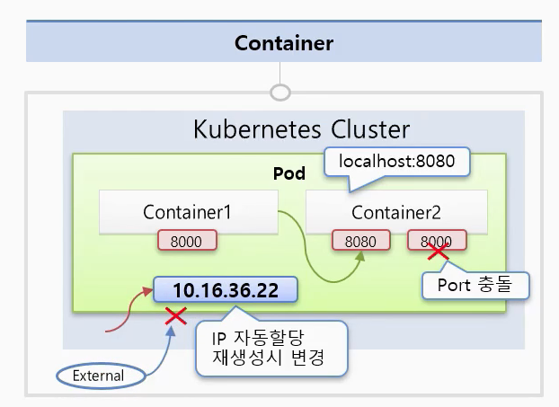
- pod 안에 독립적인 서비스를 구동할 수 있는 한개 또는 한개 이상의 컨테이너 있음.
- 한 Pod 내에서 컨테이너 끼리 포트 중복 안됨.
- 두 컨테이너는 한 호스트로 묶여있음.
- Pod 내 컨테이너 끼리는 localhost로 접근 가능.
- Pod 생성시 고유 ip 주소 할당.
- 클러스터 내에서만 접근 가능하며 외부에서는 접근 불가능.
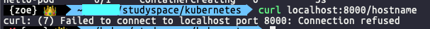
- pod 문제시 시스템이 감지, 재생성 되어짐.
- ip 주소 변경
- 휘발성
- 파드 하나 안에 있는 컨테이너들이 IP 하나를 공유.
참고 : apply 와 create 차이
https://stackoverflow.com/questions/47369351/kubectl-apply-vs-kubectl-create
kubelet
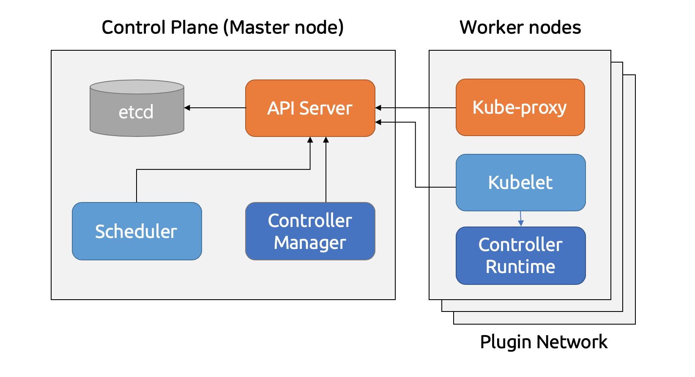
- API 서버와 통신하며 Worker 노드의 작업을 제어하는 에이전트.
- 컨테이너가 실행 된 후에 kubelet 컨테이너를 주기적으로 진단.
- 진단 수행을 위해 kubelet은 컨테이너에 의해서 구현된 핸들러를 호출.
Probe
kubelet은 실행 중인 컨테이너들에 대해서 선택적으로 세 가지 종류의 프로브를 수행.
- livenessProbe
- 컨테이너의 동작 여부 확인.
- 실패 시 컨테이너 종료, 재시작 정책에 따라 컨테이너 재시작.
- readinessProbe
- 컨테이너가 실행된 후 실제로 서비스 요청에 응답할 수 있는지 진단.
- 실패 시 엔드포인트 컨트롤러가 해당 파드에 연결된 모드 시비스 대상으로 엔트포인트 정보 제거.
- 컨테이너가 실행 된 다음 서비스에 바로 투입되어도 실제 트래픽 받을 준비가 되었음을 확인 후 트래픽을 받을 수 있음
- 자바 애플리케이션 처럼 프로세스가 시작된 후 앱이 초기화될때까지 시간이 걸리는 상황에 유용
- startupProbe
- 컨테이너 내의 애플리케이션이 시작되었는지 확인.
- 컨테이너 내의 애플리케이션이 시작되었는지 확인.
Label
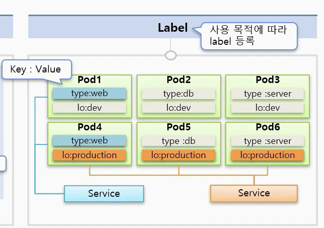
- 모든 object 에 달수 있지만 pod에서 가장 많이 사용함.
- 목적에 따라 오브젝트를 분류, 분류된 오브젝트만 묶어서 구성.
- 구성
- 키 + value
- 한 pod에는 여러개의 label을 달수 있음.
Node Schedule
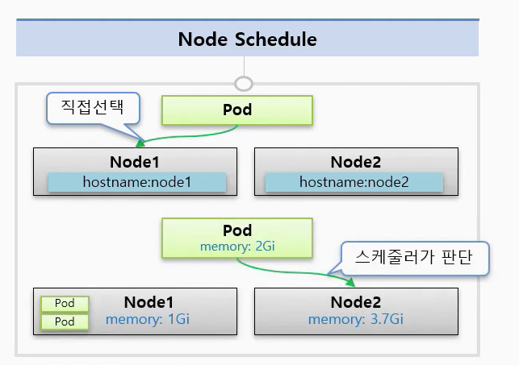
- pod는 한 노드 위에 올라가지게 됨.
방법
- 직접 노드 선택
- 쿠버네티스가 자동 지정
- 직접 노드 선택
1 | apiVersion: v1 |
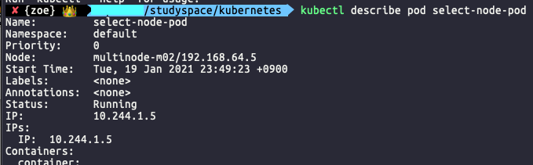
사용 이미지 허브 링크 : https://hub.docker.com/r/kubetm/init
- 쿠버네티스가 자동 지정
- 스케줄러가 판단
- pod를 설정할 때 pod 안 컨테이너가 cpu나 메모리를 얼마나 사용할 수 있을지 조건을 지정.
1 | apiVersion: v1 |
- 리소스 사용량 설정하지 않으면 파드 안 앱 부하 발생 시 무한정 노드 자원 사용.
- 다른 pod 들은 자원이 없어서 죽게됨.
- 자원 사용량이 많은 파드가 노드 하나에 모여있다면 파드들의 성능이 나빠짐.
- 전체 클러스터 자원 사용 효율도 낮아짐.
- 쿠버네티스가 파드를 스케줄링 할대 노드의 현재 사용량을 보는 것이 아님.
- requests와 resources.limits만 확인함.
Service
- pod는 쉽게 대체될수 있는 존재이므로 pod 만으로 시스템을 구성하기 힘듬.
- 재생성 되면 ip 변함.
- 신뢰성 떨어짐.
- service는 kubernetes 리소스 타입 중 하나로 각 Pod로 트래픽을 포워딩 해주는 프록시 역할.
- service ip는 사용자가 지우지 않는 한 삭제되거나 재생성 되지 않음.
- service ip는 항상 연결되있는 pod에 접근 할수 있음을 보장.
- 타입에 따라 pod에 접근하도록 도와주는 방식이 다름.
- 쿠버네티스 내부에서 사용하는 네트워크가 외부와 격리.
- 쿠버네티스 내부에서 실행한 컨테이너를 외부에서 접근하려면 서비스 이용
- 동적으로 변하는 파드들에 고정적으로 접근할 때 사용하는 방법.
- 파드가 클러스터 안 어디에 있든 고정 주소를 이용해 접근.
- 클러스터 외부에서 클러스터 안 파드에 접근.
ClusterIP 타입
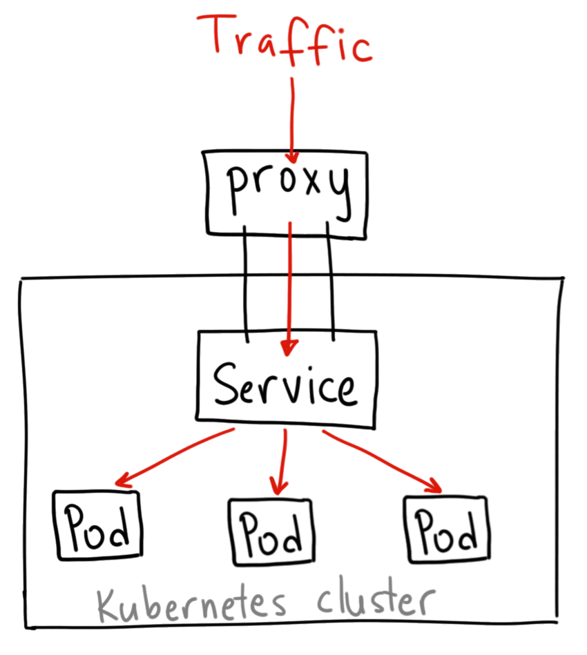
- kubernetes 기본 서비스 타입.
- 자신의 cluster ip 가지고 있음.
- 클러스터 내의 다른 앱이 접근할 수 있게 해줌.
- ClusterIP는 외부 접근 안됨.
- 서비스가 트래픽 분산하여 pod에 전달.
1 | apiVersion: v1 |
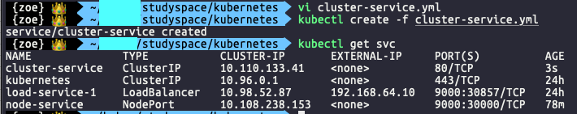
NodePort 타입
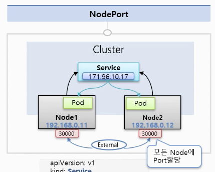
- 외부 트래픽을 서비스로 받아오기 위한 가장 원시적인 방법.
- 모든 노드(VM)에 특정한 포트를 오픈.
- 어떤 트래픽이든 해당 포트로 유입되면 서비스로 토스.
- 30000–32767 사이의 포트만 사용 가능.
- 포트 당 한 서비스만 할당 가능.
- 노드나 vm의 ip 주소가 바뀌면, 이를 반영해야함.
- service에는 기본적으로 cluster ip 할당. (기능 다들어있음)
- node1:8081, node2:8080 처럼 노드에 상관없이 서비스에 지정된 포트번호만 사용하면 파드 접근 가능.
1 | apiVersion: v1 |
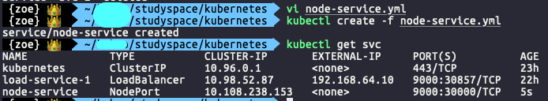
- 노드의 30000 포트가 ClusterIP 타입 서비스의 9000 포트와 연결.
- 근데 service 입장에서는 어떤 노드든 연결되있는 pod에게 전달 해주며 다른 노드일수도 있음.
- externalTrafficPolicy를 local로 하면 트래픽이 들어온 노드의 pod에게만 트래픽 전달
1 | apiVersion: v1 |
LoadBalancer 타입

- 서비스를 직접적으로 노출시키는 일반적인 방법.
- 모든 트래픽을 서비스로 포워딩하는 단 하나의 IP 주소를 제공.
- 각 서비스 마다 고유한 ip 가지게됨.
- External ip를 지원해주는 Plugin 필요 (GCP, AWS, Azure 등등 ) 대부분 비쌈..
- GKE에서는 Network Load Balancer를 작동.
- external-ip 항목에 로드밸런서 ip를 표시, 이 ip를 사용해 클러스터 외부에서 파드에 접근.
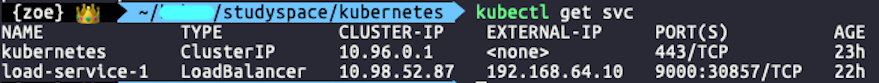
- minikube와 metalLB 를 통해 재현.
출처
https://medium.com/google-cloud/kubernetes-nodeport-vs-loadbalancer-vs-ingress-when-should-i-use-what-922f010849e0
https://futurecreator.github.io/2019/02/25/kubernetes-cluster-on-google-compute-engine-for-developers/
https://subicura.com/2019/05/19/kubernetes-basic-1.html
https://medium.com/finda-tech/kubernetes-%EB%84%A4%ED%8A%B8%EC%9B%8C%ED%81%AC-%EC%A0%95%EB%A6%AC-fccd4fd0ae6
https://blog.leocat.kr/notes/2019/08/22/translation-kubernetes-nodeport-vs-loadbalancer-vs-ingress